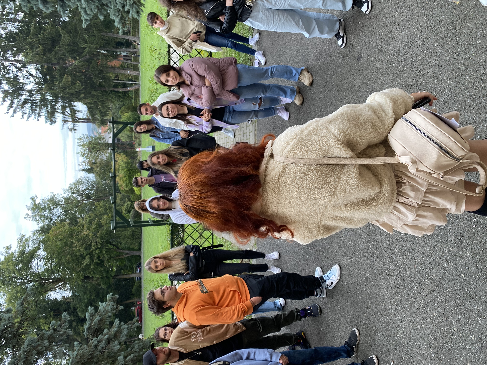

Proiecte și Evenimente
Descoperă proiectele care dau energie vieții studențești și evenimentele care aduc împreună pasiunea, creativitatea și spiritul LSSV.

Adoptă un Boboc

Târgul de Crăciun

Mediul Antreprenorial
Cupa Sportivă
Atelierul de Halloween
MĂR-țisor

Arca lui Noe
Karaoke

Quiz Night

Movie Night

Board Games

Una Scurtă

Bătaie cu Apa